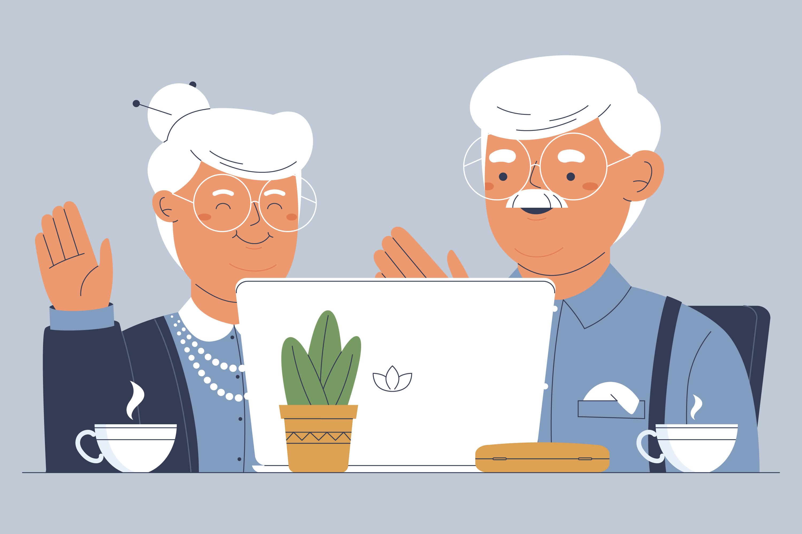

2024-08-12
"행복편지"
- 작자 박시호.

저는 8년 동안 중환자실에서 근무해 온 간호사압니다.
간호대학을 졸업하고 그토록 원하던 간호사가 되었고, 병원에 입사해 처음 배치 받은 곳은 중환자실이었습니다.
중환자실의 특성상 인공호흡기를 하고 계신 분들, 그리고 의식이 온전치 못한 환자들이 대부분입니다.
대학 4년 동안 실습시간에 많은 환자들을 대했지만 막상 중환자실에서 환자들을 직접 간호하니 긴장이 많이 되었습니다.
죽음을 맞이하는 환자들을 볼 때면 만음이 많이 아프고 두렵기도 했고요.
그런데 1년, 2년 시간이 지날수록 조금씩 무뎌지기 시작했습니다. 중환자들, 심지어 죽음에 임박한 환들이나 죽음을 맞이하는 환자들을 볼 때도
처음처럼 마음이 아프고 떨리기보다는 일상적인 일이 되어 무뎌져 버렸습니다.
물론 그렇게 무뎌지지 않으면 간호사 일을 계속 하는 게 힘든 것도 사실입니다.
그렇게 중환자들을 무덥덤하게 간호하던 1년 전 어느 날, 일흔이 넘은 할머니께서 폐럼으로 일반병실에 입원했습니다.
그러다가 혼흡 곤란으로 급히 제가 있는 중환자실로 옮겼습니다.
할머니는 의료진에 둘러싸여 기관 삽관을 하고 인공호흡기를 달았습니다.
응급조치가 끝난 두이 가족 면회시간이 이어졌습니다.
할머니의 보호자로 여든이 다 되어 보이는 할아버지 한 분이 들어오셨습니다.
인공호흡기를 달고 수면 유도제를 맞아 주무시는 할머니를 할아버지는 그저 눈물을 흘리며 바라보았지요.
중환자실의 특성상 하루 두 번 30분 면회시간 외에는 가족들이 계속 옆에 있을 수 없기 때문에 30분 후 할아버지는 돌아갔습니다.
다음 날, 면회시간이 되자 할아버지는 젖은 수건을 한 장 들고 오셔서 할머니의 몸 구석구석을 닦아주면서
"오늘따라 참 예쁘네. 동네에 벗꽃이 한창이던데 얼른 일어나서 꽃구경 가야지"
하며 한참을 속사이셨습니다. 그리곤 30분이 지나자 할머니의 볼에 뽀뽀를 하고는 중환자실을 나가셨지요.
그렇게 할아버지는 매일 면회시간마다 항상 과자를 몇 봉지 사들고 오셔서 저희들에게 나누어주시고 젖은 수건으로 할머니의 얼굴이며 손발을 닦아주면서
"오늘은 더 예쁘네. 텃밭에 상추가 얼마자 잘 자랐는지, 여기 간호사들 좀 갖다 줘야겠어."
하시며 할머니께 말을 거셨습니다. 그렇게 이 얘기, 저 얘기 하시고는 항상 마지막엔 뽀뽀를 하고 나가셨어요.
그렇게 한 달 보름이 지날 무렵, 그때까지 할머니는 의식을 회복하지 못했고 상태는 점점 나빠졌습니다.
보호자라고 해봐야 할아버지 한 분밖에 안 계신지라 할머니의 상태를 정확히 말씀드리는 것조차 쉽지 않았고, 마음이 참 무거웠습니다.
하루는 할아버지께 이런 말씀을 드렸습니다.
"할아버지, 할머니는 정말 좋으시겠어요. 할아버지처럼 할머니를 이렇게 사랑해주시느 분이 계셔셔요."
"좋긴, 나이 열여덟에 나한테 시집 와서 고생만 줄어라 했지. 호강 한번 못 시켜주고 자식이라고 아들 하나 있었는데
교통사고로 먼저 갔지. 이 나이까지 여행 한번 못 데리고 갔어."
할아버지는 결국 말을 잇지 못하고 눈시울을 붉히셨어요.
그날 밤 할머니의 상태가 더욱 나빠져 보호자 대기실에서 주무시던 할아버지를 찾아가 급히 깨웠습니다.
"할아버지" 하고 부르는 작은 목소리에도 금방 눈을 뜨셨고, 저는 차마 할머니가 위독하다는 말이 나오지 않아 할아버지의 눈만 쳐다보고
있지니 어쩔 수 없이 제 눈에 눈물이 고이기 시작했습니다.
할아버지는 오히려 제 어깨를 다독이며 "가야지" 하시며 자리에서 일어나셨습니다.
할아버지가 중환자실에 들어가자 할머니의 심장 박동수는 점차 느려졌고, 할아버지는 할머니의 손을 꼭 붙잡으시고는 말씀하였습니다.
"편히 가라. 다음 생에도 꼭 나랑 결혼하자. 그 때는 재가 해외여행도 보내주고 왕비처럼 행복하게 해줄게."
할아버지의 말씀이 끝나자마다 할머니의 심장이 멈쳤습니다.
할머니의 마지막 순간에도 할아버지는 할머니의 볼에 뽀뽀를 해주셨고,
할머니의 가시는 길을 왕비 대하듯 지켜주셨습니다.
그 후로 그 할아버지를 뵐 순 없어지만 할머니를 향한 할아버지의 사랑은 지금도 제 무뎌져 버린 심장을 따뜻하게 데와주고 있습니다.
사랑이란 이런 건가 봅니다.